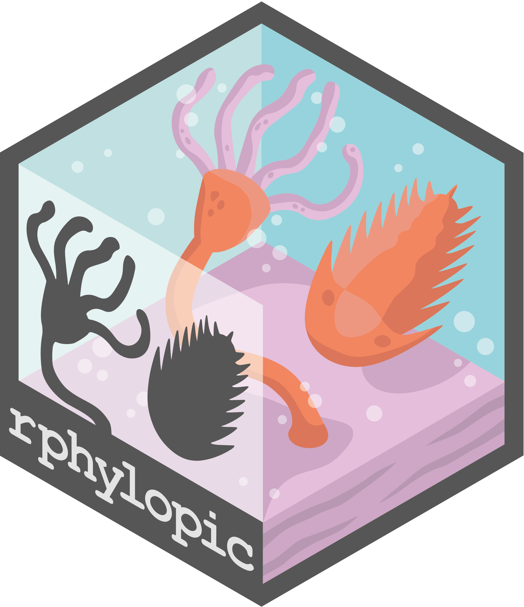
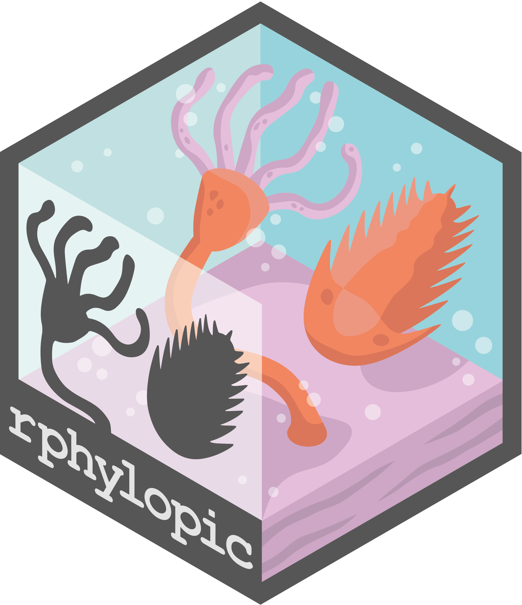

install.packages("palaeoverse")Welcome to Palaeoverse
A resource hub and community space for Palaeobiologists
Palaeoverse is an initiative which aims to bring the palaeobiology community together to share resources, reach agreed standards, and improve reproducibility in palaeobiological research.
Our toolkits
palaeoverse provides functionality to support data preparation and exploration for palaeobiological analyses, improving code reproducibility and accessibility. The aim of the palaeoverse R package is to bring the palaeobiological community together to establish agreed standards.

rmacrostrat provides streamlined and improved accessibility to the geological database Macrostrat. The package provides functionality for querying the database via the dedicated API and retrieving various geological data (e.g. lithostratigraphic units) and definitions/metadata associated with those data and Macrostrat more broadly.

install.packages("rmacrostrat")rphylopic allows users to add silhouettes of organisms from the PhyloPic website to plots generated in base R and ggplot2. rphylopic was originally developed and maintained by Scott Chamberlain. From ver. 1.0.0, the package is now developed and maintained by the Palaeoverse team.

install.packages("rphylopic")sepkoski provides access to Sepkoski’s fossil marine animal genera compendium (Sepkoski, 2002). The aim of the package is to offer a light and easily-accessible solution to working with Sepkoski’s compendium to support teaching exercises.

install.packages("sepkoski")Our Resources
Cheat sheets
It can be a lot to take in when trying to get familiar with a new R package. We provide cheat sheets for our packages to help get you started.
 

CRAN Task View
CRAN Task View is a catalogue of R packages that are specifically geared towards acquiring, cleaning, visualising, and/or analysing various kinds of palaeontological and palaeontology-adjacent data. We use this venue to showcase the wide variety of R packages available across the palaeosciences and to provide a brief overview of each package for a broad audience of R users.
Directory
Directory is a resource to promote the communication of upcoming conferences, workshops, and vacancies. It also provides a register of research labs and their research focus. We hope that this resource fosters networking and collaboration across the globe.
Grant Track
Grant Track is an online community database of research funding schemes and grants for Palaeobiologists. This framework is provided to support the community in easily keeping track of available funding opportunities.
External resources
We have created a table of external resources to help the community to find relevant R and palaeobiological resources.
Community spaces
Google group
We host a community space for palaeobiologists using the Google Groups platform. This space provides an area to share ideas and resources, advertise opportunities, and network with colleagues in an informal setting. Questions related to Palaeoverse packages are also more than welcome.
Bluesky 
We are active on Bluesky, where we share updates and news on Palaeoverse, as well as resources for the palaeobiology community. We are also more than happy to help circulate relevant news you wish to share with the community, just remember to tag @palaeoverse.bsky.social and use the hashtag #palaeoverse.
Get involved
We welcome both code and non-code contributions. You can contribute in the following ways:
R packages üë©üèΩ‚Äçüíª
Contribute to functionality available in Palaeoverse R Packages, such as palaeoverse, rmacrostrat, and rphylopic. Jump to toolkits…
Review üîç
Become a Palaeoverse Reviewer - Review code, documentation, and resources. We believe community input is key to improving user experience!
Data üóÉ
Contribute to Palaeoverse databases such as the Directory and Grant Track. These databases aim to centralise useful information for the community.
Community üí¨
Be active in community spaces such as the Palaeoverse Google Group, an area to share ideas and resources, advertise opportunities, and network with colleagues.
About us
We are an international group of Early Career Researchers with the aim of encouraging more open, reproducible and collaborative research in palaeobiology. To do so, we provide tools and resources–developed alongside the community–that help to promote this culture.
The team
Lewis Jones
University College London

William Gearty
Syracuse University

Bethany Allen
ETH Zürich

Christopher Dean
University College London

Sofía Galván
Universidade de Vigo

Pedro Godoy
University of São Paulo

Miranta Kouvari
University College London

Cecily Nicholl
University College London

Kilian Eichenseer
University of Durham

Alessandro Chiarenza
Universidade de Vigo

Erin Dillon
Smithsonian Tropical Research Institute

Lucas Buffan
École Normale Supérieure de Lyon
Harriet Drage
University of Lausanne
Bruna Farina
University of Fribourg
Joe Flannery-Sutherland
University of Birmingham